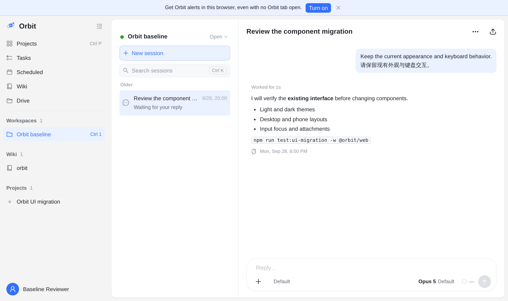
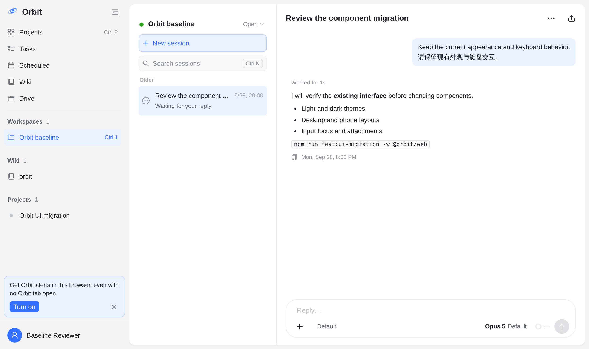
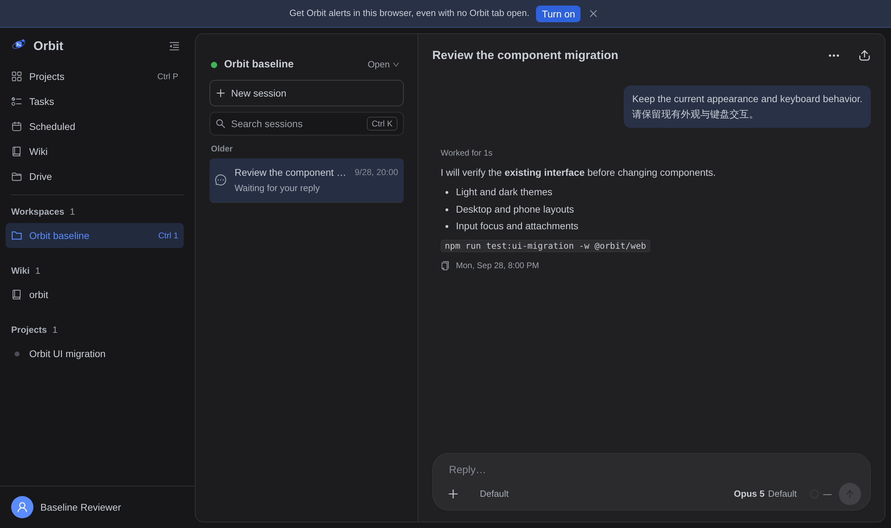
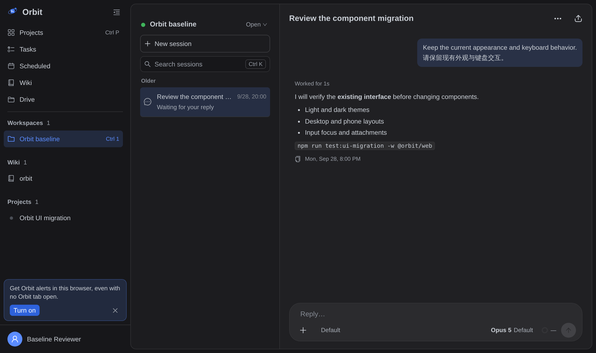
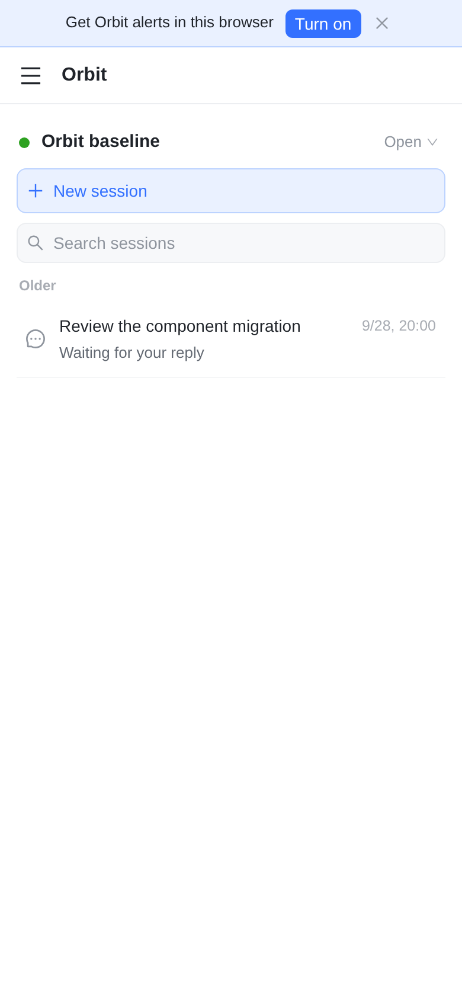
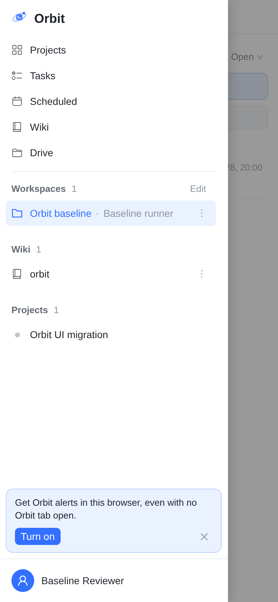

当前分支构建的真实 Web，假数据，1280×760 @2x。文字：「Get Orbit alerts in this browser, even with no Orbit tab open.」一个 Turn on，一个 ✕（Not now）。

整页最上方一条 40px 蓝色浅底横条，位置和「Viewing as」那条一样，页面整体下移 40px，答完就收起。

左侧栏账号上方一张小卡片，不挪动页面，安静一些。



手机上一行放不下，只留前半句「Get Orbit alerts in this browser」。

手机上卡片在抽屉菜单里，要点 ☰ 才看得到。
| 方案 A · 顶部横条 | 方案 B · 侧栏底部卡片 | 建议 | |
|---|---|---|---|
| D4 放哪 | 最显眼，手机上也直接看到；页面下移 40px，直到回答。 | 不挪页面、更安静；但容易被忽略，手机上藏在菜单里。 | A：你要的是“横条”，只出现一次，手机也能看到。 |